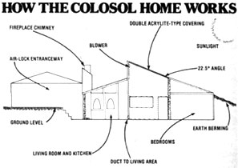

The energy-efficiency of this home depends upon three major features: The heat-saving capabilities of earth-sheltering, the collection of solar warmth through the atrium and skylights, and the retention of heat in concrete, rock, and tile flooring.